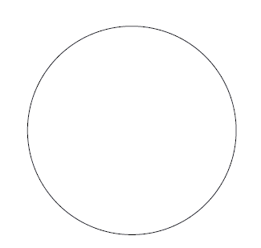

| 地球の円い話 | |
| 中谷 宇吉郎 | |
| (2013) | |
地球の円い話
中谷宇吉郎
地球が円いという話は、何も珍しいことではない。今日では大抵の小学生が皆知っている通りである。
もっとも地球が完全な球形であるというのは本当は間違いで、第一に地球の表面にはヒマラヤの山もあれば、日本海溝もあるので、詳しく言えば、凹凸
のあることは勿論
である。それに中学生くらいならば、地球はそれらの凹凸を平均しても、やはり完全に円くはないので、南北方向に縮んだ楕円形
になっていることを知っているであろう。
次に大学生になると、もっとも理学方面の学問を学んでいる連中のことであるが、地球の形を高低平均するといっても意味が曖昧
なので、海の平均水準面を陸地の内部まで延長して、いわゆるゼオイドなる平均海面を考える必要があることを教えられる。そして地球の形は楕円体でもないので、擬似
楕円体と称すべきであるなどということになる。
更に地球物理学者にきくと、地球の形は、それらのいずれでもないので、「狐
の色が狐色である如く、地球の形は地球形である」という返事をされるであろう。
こうなると話に切りがなくなるので、結局地球の形はどんなものかどころではなく、地球の形というのは何を指すのかも一般の素人
にはちょっと分らなくなってしまう。

ところがこれらの色々の説明の中で、一番真に近いのは、結局小学生の答えであって、地球は完全に円い球であると思うのが、一般の人々にとっては一番本当なのである。というのは、図に示した形は、コンパスで描
いた図であるが、これが地球の形の代表的なものである。コンパスで描いた以上、この図形は線の幅の範囲内では、完全な円である。そして実際に地球は、この線の幅の範囲内では、丁度この円のような形をしているのである。それでは地球が円いというのも不思議ではないであろう。
その真偽をためすためには、次のような簡単な計算をして見れば、問題は極めて明瞭
になる。この円は直径六糎
あって、線の幅は〇・二粍
である。それでこの円を地球と見ると、地球の直径一万三千粁
を六糎に縮尺して描いたことになる。この縮尺率から計算すると、線の幅〇・二粍は四十四粁に相当する。
ところでエヴェレストの高さは海抜八・九粁で、海の一番深い所といわれるエムデン海溝が一〇・八粁の深さである。それで現在知られている地表上の凹凸の差の極限は一九・七粁に過ぎない。即ち地球の表面の凹凸は、極限がこの図の線の幅の半分以下である。従って地球表面の普通の山や海の凹凸を忠実に描いて見ても、大体この線の幅の十分の一程度の凹凸になってしまうので、それではいくら鉛筆の頭を尖
らしても、到底描けるものではない。
次に地球が楕円形になっている程度であるが、それも案外少いので、赤道面内の半径よりも、南北の半径が約二十二粁短いだけである。即ち楕円体といっても、前の図の線の幅の半分程度長短があるに過ぎないので、ちゃんとした楕円体に描いて見ても、結局このコンパスで描いた円と同じ形になってしまうはずである。
こう考えて見れば、地球の形を図に描いて見るとなると、結局コンパスで円い円を描くより仕方がない。即ち小学生の答が一番本当に近いということになってしまうわけである。少し胡魔化
したように見えるが、この話の秘訣
は、鉛筆で描いた線には幅があるという点に帰するのである。
実際に描く線には必ず幅があることくらいは、誰
も知らない人はない。しかしこの一番簡単なことをつい忘れている人が案外多いように思われる。前の図の線の幅が四十四粁に相当するとなると、現在の気象学がやっとこの頃手を染めかけた成層圏というのが、僅
か十粁を越えたところを問題にしているに過ぎないし、地殻の中のことは勿論
そんな深いところは分らないから、結局現在のわれわれの知識は、確かなところはこの線の幅の半分位にしか達していないのである。そうなると線の幅もなかなか馬鹿には出来なくなる。われわれの現在の知識が僅かその程度にしか及んでいないことに驚く人があったら、その人は鉛筆で描いた線には幅があることを忘れている人である。
数学でいう線には幅がないが、物理で使う線には必ず幅がある。或る量の測定をして、その量が他の変数、例えば温度とか時間とかと、どういう関係になっているかを示すには、図の上に曲線であらわすのが一番普通であり、かつ分りやすい。この場合にも曲線は鉛筆で描くので、それには幅がある。鉛筆の頭をせいぜいとがらして見ても、〇・一粍という細い線は先
ずむつかしい。しかしその程度の細い曲線を描いたとして、その時測定値が皆その線の上にぴたりと載ったとしたら、それは精密な測定であって、しかもちゃんとした関係が見付かったとして物理学者は安心する。それを説明された一般の人は、特に天邪鬼
でない限りは、一層安心するのが当前
である。
この場合、測定が精密でかつ正確になされたということは、観測値がぴたりと曲線の上に載ることから言われるのであるが、よく考えて見ると、大抵の場合は、図の上での曲線の高さは十糎か二十糎程度である。そうすると、〇・一粍の幅の線の上に観測値が載るためには、その値に〇・二粍までの誤差が許されるので、結局三桁
の数字が出る程度の精確さで測定をしておけば、大抵充分に精密な測定として受け入れられることになるのである。
言うまでもなく、測定は人間が機械を用いて行うので、その精度には常に一定の限界がある。言い換えれば、物理の方で測定値として取扱う数値にはいつでも誤差が伴っているので、その誤差の入って来ないところにある上位の数値だけが物理的に意味のある値なのである。そういう数値が三桁あれば、普通の場合には、今言ったように先ずかなり精密な測定として通用するわけなのである。
こういう意味のある数字を有効数字というのであるが、有効数字が三桁というのは、例えば56.2とか7.31とかいう数である。数字で書いて見ると三桁位のものは極めて簡単な数で、小学校の三年生位ならば楽々と取り扱える程度のものである。ところが物理の方では三桁目まで精確な測定値が得られれば、大抵の場合には、それで先ず充分に精密な測定と思って差支えない。そして普通の物理的性質は、それ位の精度で分れば、それで充分に壮麗な物理学の殿堂を築き上げる材料として採用することが出来るのである。
もっとも三桁というのは、一般の場合であって、精密な物理の測定では四桁も五桁もちゃんと測定がなされていることもしばしばある。こういう場合に意味のある数字を一桁増すことは、誤差を更に十分の一に縮めることであって、実は非常に骨の折れる仕事なのである。学生実験の報告書とか、独逸
の学位論文の或るものとかを見ると、六桁位の数字が平気で沢山並んでいることがあるが、そういうものは大抵は、計算の途中に割算で沢山桁数を出したもので、此処
では問題とするまでもないものである。本当の意味で有効数字が六桁も並んでいる測定があったら、その数字には正に脱帽して接すべきである。
以上は測定値の本当の正しさ、即ち絶対値の精度のことを言ったので、相対値となると話は少しちがって来る。相対値というのは、測定される量と同種の或る量を基準として、それとの比較値を求めることである。現在色々な物理量の中で最も精密に測られているものの一つは、分光学の元素のスペクトルの波長である。波長の表を見ると七桁位の数字がずっと並んでいるし、現在のこの方面の実験技術と機械の精度とは、その程度の「有効数字」を得るまでに進んでいる。しかしこの数字は、カドミウム元素から或る発光条件の下
に出る或る光の波長を基準として、それとの比較値を示しているのである。それで本当の波長の長さを知るには、その基準波長の長さをメートル原器と比較して、ちゃんとした基準の値を出して置く必要がある。勿論その測定のためには、世界各国で優れた学者が厳密を極めた実験をしたのである。そして現今国際間に認められた値として、6438.4696Å
――Å
は十億分の一粍――が採用されている。その後
我が国で渡辺
博士らによって、さらに精密になされた測定では、その波長は6438.4682Å
と出ているし、英国の他の測定では6438.4708Å
となっている。八桁出ているが、その中
初めの六桁が正確に合っている。この測定などが、現代の物理学で到達し得る精度の最高標準を示しているので、六桁の有効数字というのは、それほど恐ろしいものなのである。
六桁の有効数字の他の例は、三角測定の基線の長さである。土地の測量は三角法を用いて角度だけを測って組立てて行くので、それには基本になる長さ即ち基線を十分精密に測っておく必要がある。その長さは普通四粁か五粁位あるが、六桁目は糎の単位になる。即ち四粁か五粁程度の距離を粍まで測って四捨五入して、やっと六桁の有効数字が得られるのであるから、単に長さを測るというような一番簡単な場合でも、六桁の有効数字というのが先ず極限であることが分るであろう。
こういう風に考えて見ると、六桁が極限であるはずなのに、実際には、メートル原器によるカドミウム線の波長検定としては、八桁の数字が挙げられている。その数字は実は、国際間に条約で定めた数値なのであって、即ち国際単位である。この国際単位の最後の一、二桁には物理的意味がないのであるが、国際間で一度そういう風に決めておけば差しつかえないのである。この種の国際単位は別に珍しいものではないが、一般には物理常数を条約で決めるなどということに初耳の人があるかも知れないので、附記する次第である。この種の国際単位は電気の方などにも沢山あって、電気の場合には四桁しか出せなかった時代に、その後に０を二つつけて六桁に約束で決めている。それから基線測量の方では、八桁即ち粍の十分の一まで出してあるが、この方は参考の程度にという意味である。
話は前の地球は円いという話に戻るが、三桁程度の精度では、地球の形はコンパスで描いた円になる。この時六桁まで精度を高めるということは、精度を千倍にすること、即ち前の図の線の幅〇・二粍を二十糎にひろげることになる。そうすれば、山と海の高低や楕円率は勿論のこと、楕円からの偏差までも出て来るのは当然である。実際にそういう精度が測地学の方では到達されているのである。測地学といってもそのなかで色々の方法があるが、一番精密に地球の形を決めるには、地表での重力分布を測って、それから計算する方法がある。地球の形を重力分布から出すのは廻
り遠いようであるが、その巧
い点は、重力というものが非常に精密に測り得るところにある。例えば東京における重力の値が979.805という風に六桁まで測り得るのである。最後の数字は少し確実でないかも知れないが、第一位が９であるから、完全に六桁の精度と言って良い。
このように重力は極めて精密に測り得る点は大変工合よいのであるが、それは特殊振子
の周期を測る方法に依
るので、地上での測定はよいとしても、海の上ではどうして測定すればよいかという問題が起きて来る。
振子の振動をしかも六桁という恐るべき精度で測るのであるから、よほどしっかりした土台が必要である。それを動揺する船の上で測ることは、先ず絶望である。それで潜水艦が或る深さ以上潜ると、動揺が殆
んどないという点を利用して、潜水艦の中で特殊の振子を用いて重力を測るという方法が考案され、実際に世界各地の海でその測定がなされたのである。
しかし潜水艦というものは大変苦しいものの由で、その中で普通に働くことすら、実は大変な忍耐を要するという話である。まして潜水状態で、前に言ったような極度に精密を要する測定をするのは生易
しいことではない。それでこの方法で世界中の七つの海を隈
なく探るという案は先ず実行不可能である。
ところが人間の智力
もまた恐ろしいもので、この頃動揺する船の上でも、まるでコンクリートの台の上と同じように、重力を精密に測り得る装置が考案された。それは我が国の坪井忠二
博士の手で出来たものであって、その主旨は、複雑な船の動揺を詳しく分析究明して、動揺の各要素について、それぞれその振動の影響から逃げるように振子の構造を工夫したのである。これならば豪華船のサロンに備えつけて、シガーでも吹かしながら測定出来るので、潜水艦の中で酸素かイオンかの足りない空気に轍鮒
の苦しみを嘗
めるのとは大変なちがいである。この発明は艱苦
欠乏に耐えるという精神主義には悖
るが、楽に沢山の精密な観測値を得る点では優れた発明である。
このように大変な努力をして、観測の精度の極致をつくして重力を測って、それが何かの役に立つことがあるかという疑問が起り得るであろう。その答えとして一例を挙げれば、これは地殻の構造、ひいては地震と密接な関係があるのである。重力をこの程度に精密に測ると、地球の正確な形と同時に、局所的に地殻内に質量が平均値よりも過剰または不足している所があるのが探査されるのである。その質量の不足と地震とは関係があるので、この研究は大地の底にある一種の「空洞」の調査とも言うことが出来る。それでこういう研究も何も学者の道楽とは限らないのである。
最後に、全く役には立たないが、ちょっと面白い一つの考察がある。それは大抵の物理的性質は、三桁位の精度で分れば、それで充分であるということと、人智
の極致をつくした精密な測定が、殆んど例外なく六桁で止っているということである。即ち観測の精度には、三桁と六桁とに何か意味があるらしく思われるのである。もっとも六桁の方は前に注意した人もあって、10-6
というのが極めて広い意味での物理恒数
であるというような珍説を出した人もある。普通の物理は三桁程度というのは、それに輪をかけた迷説で、自分の実験の技術の程度を言っているのかも知れないが、その程度でも物理で生活が出来るところを見ると、何か意味があるらしくも思われるのである。
（昭和十五年二月一日）
底本：「中谷宇吉郎随筆集」岩波文庫、岩波書店
１９８８（昭和63
）年9
月16
日第1
刷発行
２０１１（平成23
）年1
月6
日第26
刷発行
底本の親本：「続冬の華」甲鳥書林
１９５０（昭和25
）年
初出：「思想」
１９４０（昭和15
）年2
月1
日
※表題は底本では、「地球の円
い話」となっています。
入力：門田裕志
校正：川山隆
２０１３年1
月4
日作成
２０１３年5
月9
日修正
青空文庫作成ファイル：
このファイルは、インターネットの図書館、青空文庫（http://www.aozora.gr.jp/）で作られました。入力、校正、制作にあたったのは、ボランティアの皆さんです。